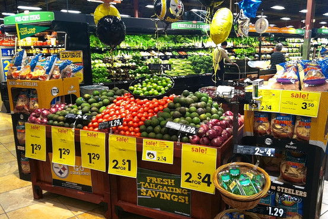

Grab n Go
What is it about

Are you looking for a service that combines the efficiency and convenience of a professional caterer with the appetizing appeal of a high-quality restaurant? When you call Sai's Grab n Go Deli you get the best of both worlds. We provide catering for every budget and every occasion, so let us help you plan your party’s catering today!
Serving up thousands of made-to-order sandwiches with ingredients like premium Black Angus corned beef and pastrami, free-range chicken and turkey, housemade chopped liver and chicken salad. The Deli also stocks an exceptional array of farmhouse cheeses, estate-bottled olive oils, varietal vinegars, smoked fish, salami, coffee, tea and much, much more. Today, Sai's Grab n Go is a Detroit institution, the source of great food and great experiences for thousands of visitors every year.
Finding food is hardly all we do here. From the start, it’s been our sincere hope that Sai’s will always be a place where people will leave having had a rewarding and really positive experience. The kind of spot where folks who’ve never heard of hundred-year-old balsamic vinegar, Nashville hot (as in super-spicy) fried chicken, chess pie, rye, or handmade harissa can come and taste these things for themselves. An organization in which new staff members can relatively quickly become veritable experts. Whether it’s hot corned beef, home-cooked chicken broth, well-aged wheels of mountain Gruyere, or really good loaves of hearth-baked French mountain bread, we want to bring as much traditional food to as many people as we possibly can
Despite the fact that any HR expert would have called us a mismatch because we occupied opposite ends of the org chart when we met, we were actually sort of a match made in the world of food business idealism. We spent many an evening discussing what we would do if we had our own place and weren’t weighed down by the less than super-high standards set by the folks for whom we were working. We talked regularly about how we could build a business that would bring potato pancakes, chicken soup, goat cheese, smoked salmon, and other very special foods to a town that really didn’t have much of that sort of thing. And of how we could do it in a way that was unique to us, something special
How it all started
We spent many an evening discussing what we would do if we had our own place and weren’t weighed down by the less than super-high standards set by the folks for whom we were working. We talked regularly about how we could build a business that would bring potato pancakes, chicken soup, goat cheese, smoked salmon, and other very special foods to a town that really didn’t have much of that sort of thing. And of how we could do it in a way that was unique to us, something special
the one idea that stuck with us more than any other was to start a delicatessen. We’d both grown up eating Jewish food—he in Detroit, me in Chicago—and we’d been accustomed to enjoying a good corned beef sandwich when we wanted one. I’m sure we were hardly the only ones to have the idea. And for a long while, it was just that. Meanwhile, I kept on in my mainstream management position. It certainly wasn’t a bad job, but it was becoming increasingly clear to me that I was giving my all in an organization of folks with more modest visions and values of food and management.